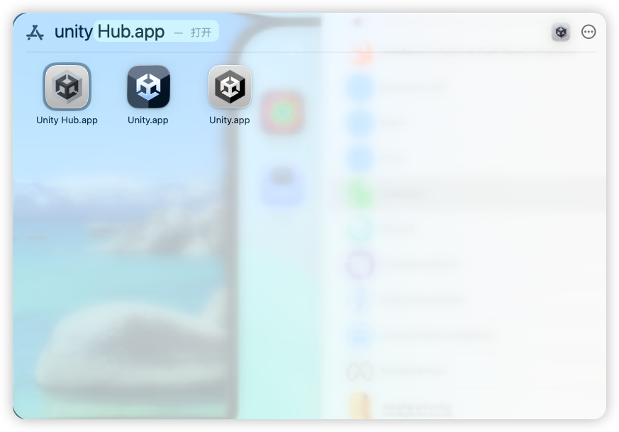
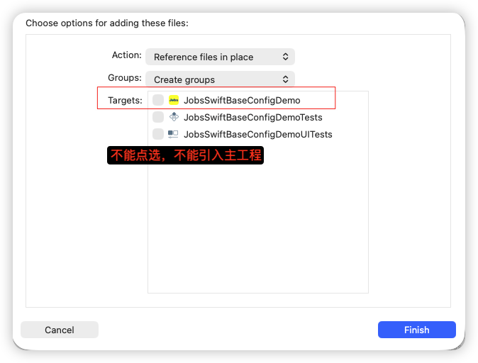
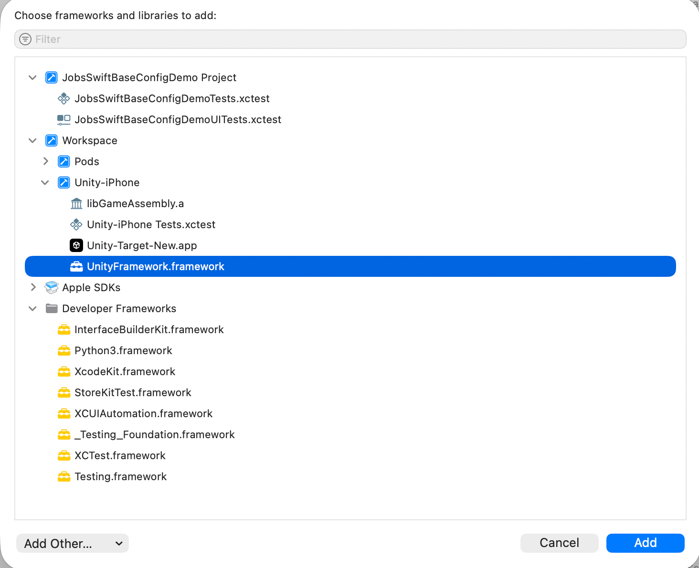
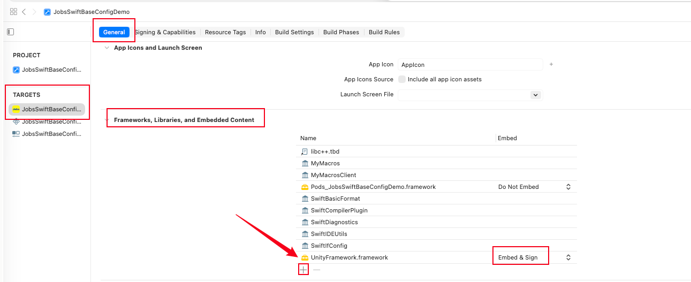
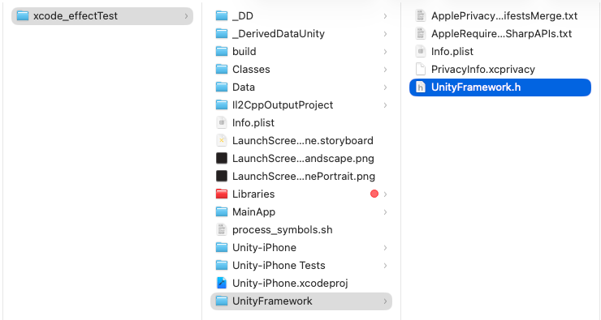
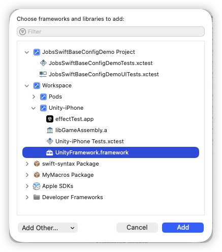
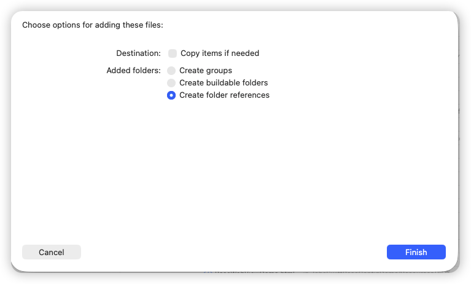
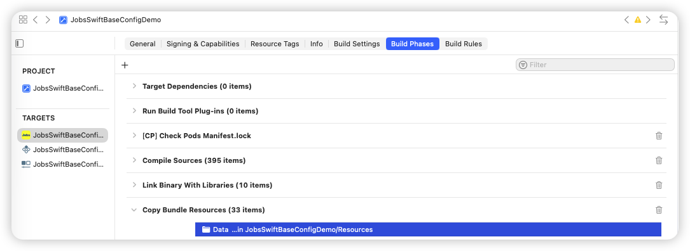

Table of Contents
前言
- 配置Unity是比较繁琐的，特别是对于以往开发过程中没有接触过此类操作的人员比较虐心，因为包含了很多代码能力以外的经验。笔者退出此文以保姆式教学，助力避坑以求高效开发
- 如果需要iOS模拟器也支持Unity，则需要Unity侧提供关于iOS模拟器的SDK包，否则只能做条件编译
- 如需条件编译，不要把主工程的配置项改的乱七八糟。利用
*.xcconfig的优先级最高的特点对主工程的配置项进行覆写
- 如需条件编译，不要把主工程的配置项改的乱七八糟。利用
- Unity这个框架虽然美如画，但是偏重（适用于游戏），而且使用成本也不低，如果没有钻研的较为深入，恐难驾驭
- 集成了Unity，对项目包的大小会有显著增长，对此敏感的研发人员，需要有一定的心理准备
- Unity会占用主线程，会影响UI刷新导致一个1秒左右的卡顿（Xcode会提示紫色的警告），且接管系统UIWindow，所以仅仅能够集成是远远不够的
一、前置条件
-
在
unity.app里面导出关于iOS侧的工程项目 ➤ 包含UnityFramework.framwork
-
引入整个Unity生成的Xcode工程 ➤ 主工程项目

-
在项目主工程中导入
UnityFramework.framwork➤ 条件编译需要做额外的特殊处理
-
在左侧点开
Unity-iPhone子工程 ➤TARGETS，确认里面有一个叫UnityFramework的 target（Unity 新版会有）
-
二、无差别导入（适用于Unity侧提供的iOS包兼容iOS模拟器和实体设备）
1、选中主 App ➤ TARGETS ➤ General
1.1、Frameworks, Libraries, and Embedded Content ➤ 如果是条件编译，那么这一步跳过
-
点
+→ 选择UnityFramework.framework（在Unity-iPhone→Products下面） -
x
Embed一栏改成 Embed & Sign


2、选中主 App ➤ TARGETS ➤ Build Settings ➤
2.1、Other Linker Flags 里加：-ObjC

2.2、 Framework Search Paths 里加："$(SRCROOT)/Unity"

2.3、 Library Search Paths 里加：
$(PROJECT_DIR)/Unity/xcode_effectTest/Il2CppOutputProject/IL2CPP/build/deploy_arm64$(PROJECT_DIR)/Unity/xcode_effectTest/Il2CppOutputProject/IL2CPP/build/deploy_x86_64$(PROJECT_DIR)/Unity/xcode_effectTest/Libraries

2.4、Header Search Paths 里加：
-
"$(SRCROOT)/Unity/xcode_effectTest/Classes" -
"$(SRCROOT)/Unity/xcode_effectTest/Libraries" -
"$(SRCROOT)/Unity/xcode_effectTest"

2.5、Runpath Search Paths 里确保有：@executable_path/Frameworks

-
建立桥接文件，并写入：
#import <TargetConditionals.h> #if !TARGET_OS_SIMULATOR && __has_include(<UnityFramework/UnityFramework.h>) // 只有真机（iPhone / iPad）才加入 Unity #import <UnityFramework/UnityFramework.h> #endif -
将Unity资源以Unity希望的方式进包
-
将Unity工程下的
Data文件夹集成到主工程 -
Unity官方要求 ➤ 打出的
*.app这些资源应该是在文件夹Data下做统一管理JobsSwiftBaseConfigDemo.app/ Data/ ← 这个文件夹必须真的出现 boot.config globalgamemanagers ... -
手动集成 ➤ 直接在Xcode新建蓝色文件夹可能会不灵


-
三、条件编译（适用于Unity侧提供的iOS包只支持实体设备，而不兼容iOS模拟器）
- 原因是不同设备的CPU架构不一样，涉及到的底层的CPU指令集不同
- 条件编译的操作只是在无差别导入操作基础上进行一些细微的升级
1、跳过 Frameworks, Libraries, and Embedded Content
2、选中主 App ➤ TARGETS ➤ Build Phases


2.1、脚本A ➤ 去掉勾选Based on dependency analysis
set -euo pipefail
# 只在真机执行
case "${SDKROOT}" in
*iphonesimulator*)
echo "▶︎ A: simulator build -> skip Unity build"
exit 0
;;
esac
UNITY_PROJ="${SRCROOT}/Unity/xcode_effectTest/Unity-iPhone.xcodeproj"
# 主工程 Debug 时，让 Unity 用 Release（更稳；你也可以强制一直 Release）
UNITY_CONF="${CONFIGURATION}"
if [ "${UNITY_CONF}" = "Debug" ]; then
UNITY_CONF="Release"
fi
DD_ROOT="${SRCROOT}/.DerivedDataUnity"
SYMROOT="${DD_ROOT}/Build/Products"
OBJROOT="${DD_ROOT}/Build/Intermediates"
mkdir -p "${SYMROOT}" "${OBJROOT}"
DEV_DIR="${DEVELOPER_DIR:-$(/usr/bin/xcode-select -p)}"
echo "▶︎ A: UNITY_PROJ = ${UNITY_PROJ}"
echo "▶︎ A: host CONFIGURATION = ${CONFIGURATION}"
echo "▶︎ A: Unity CONFIGURATION = ${UNITY_CONF}"
echo "▶︎ A: SYMROOT = ${SYMROOT}"
echo "▶︎ A: OBJROOT = ${OBJROOT}"
echo "▶︎ A: DEVELOPER_DIR = ${DEV_DIR}"
# 关键：不用 -derivedDataPath（否则会要求 -scheme）
# 同时用干净环境避免主工程 WRAPPER_NAME/PRODUCT_NAME 污染 Unity build
/usr/bin/env -i \
PATH="${PATH}" \
HOME="${HOME}" \
USER="${USER}" \
LANG="${LANG:-en_US.UTF-8}" \
TMPDIR="${TMPDIR:-/tmp}" \
DEVELOPER_DIR="${DEV_DIR}" \
/usr/bin/xcodebuild \
-project "${UNITY_PROJ}" \
-target "UnityFramework" \
-configuration "${UNITY_CONF}" \
-sdk iphoneos \
-destination "generic/platform=iOS" \
CODE_SIGNING_ALLOWED=NO \
CODE_SIGNING_REQUIRED=NO \
CODE_SIGN_IDENTITY="" \
ENABLE_DEBUG_DYLIB=NO \
SYMROOT="${SYMROOT}" \
OBJROOT="${OBJROOT}" \
build
SRC_FW="${SYMROOT}/${UNITY_CONF}-iphoneos/UnityFramework.framework"
DST_FW="${BUILT_PRODUCTS_DIR}/UnityFramework.framework"
echo "▶︎ A: SRC_FW = ${SRC_FW}"
echo "▶︎ A: DST_FW = ${DST_FW}"
if [ ! -d "${SRC_FW}" ]; then
echo "✖︎ A: UnityFramework.framework not produced: ${SRC_FW}"
exit 1
fi
rm -rf "${DST_FW}"
/usr/bin/ditto "${SRC_FW}" "${DST_FW}"
echo "✅ A: staged UnityFramework.framework into BUILT_PRODUCTS_DIR"
2.2、脚本B ➤ 去掉勾选Based on dependency analysis
set -euo pipefail
# 只在真机编译
if [[ "${SDKROOT}" == *"iphonesimulator"* ]]; then
echo "▶︎ B: simulator build -> skip embed"
exit 0
fi
SRC_FW="${BUILT_PRODUCTS_DIR}/UnityFramework.framework"
DST_FW="${TARGET_BUILD_DIR}/${FRAMEWORKS_FOLDER_PATH}/UnityFramework.framework"
if [[ ! -d "${SRC_FW}" ]]; then
echo "✖︎ B: missing ${SRC_FW} (did Run Script A run successfully?)"
exit 1
fi
rm -rf "${DST_FW}"
mkdir -p "${TARGET_BUILD_DIR}/${FRAMEWORKS_FOLDER_PATH}"
ditto "${SRC_FW}" "${DST_FW}"
echo "▶︎ B: embedded -> ${DST_FW}"
# 手动 codesign（因为你已经从 Embed Frameworks/UI 里删掉了 UnityFramework.framework）
if [[ -n "${EXPANDED_CODE_SIGN_IDENTITY:-}" && "${CODE_SIGNING_ALLOWED:-YES}" != "NO" ]]; then
/usr/bin/codesign --force --sign "${EXPANDED_CODE_SIGN_IDENTITY}" \
--preserve-metadata=identifier,entitlements \
"${DST_FW}"
echo "▶︎ B: codesigned"
else
echo "▶︎ B: codesign skipped (no identity or signing not allowed)"
fi
3、配置 *.xcconfig
3.1、挂载*.xcconfig

3.2、JobsConfig.xcconfig
//
// JobsConfig.xcconfig
// JobsSwiftBaseConfigDemo
//
// Created by Mac on 11/1/25.
//
// Configuration settings file format documentation can be found at:
// https://developer.apple.com/documentation/xcode/adding-a-build-configuration-file-to-your-project
//
// 此文件仅仅针对单一语言环境下的一些配置。
// 在多语言环境下，此文件的某些配置项，将会用各语言的 InfoPlist.strings 进行覆盖
PRODUCT_NAME = SwiftDemo
APP_DISPLAY_NAME = SwiftDemo
INFOPLIST_KEY_CFBundleDisplayName = $(APP_DISPLAY_NAME)
INFOPLIST_KEY_CFBundleName = $(PRODUCT_NAME)
// ================================== Unity iOS 真机专用：模拟器禁用 ==================================
// ObjC/C 宏：#if JOBS_UNITY_ENABLED ...
JOBS_UNITY_ENABLED[sdk=iphoneos*] = 1
JOBS_UNITY_ENABLED[sdk=iphonesimulator*] = 0
GCC_PREPROCESSOR_DEFINITIONS = $(inherited) JOBS_UNITY_ENABLED=$(JOBS_UNITY_ENABLED)
// Swift 条件：#if JOBS_UNITY_ENABLED ...
SWIFT_ACTIVE_COMPILATION_CONDITIONS = $(inherited)
SWIFT_ACTIVE_COMPILATION_CONDITIONS[sdk=iphoneos*] = $(inherited) JOBS_UNITY_ENABLED
SWIFT_ACTIVE_COMPILATION_CONDITIONS[sdk=iphonesimulator*] = $(inherited)
// ================================== Unity：只给真机的搜索路径 + 链接参数 ==================================
// 让 linker 在真机时能从 Run Script A 拷贝进来的 BUILT_PRODUCTS_DIR 找到 UnityFramework.framework
JOBS_UNITY_FRAMEWORK_SEARCH_PATHS[sdk=iphoneos*] = $(inherited) $(BUILT_PRODUCTS_DIR) $(SRCROOT)/Unity
JOBS_UNITY_FRAMEWORK_SEARCH_PATHS[sdk=iphonesimulator*] =
FRAMEWORK_SEARCH_PATHS = $(inherited) $(JOBS_UNITY_FRAMEWORK_SEARCH_PATHS)
// 真机链接 UnityFramework，模拟器清空（不再去找 framework）
JOBS_UNITY_OTHER_LDFLAGS[sdk=iphoneos*] = -framework UnityFramework
JOBS_UNITY_OTHER_LDFLAGS[sdk=iphonesimulator*] =
OTHER_LDFLAGS = $(inherited) $(JOBS_UNITY_OTHER_LDFLAGS)
// ================================== 其他：保持 inherited ==================================
// bridging header 已经做了条件 import，一般不需要额外 Header Search Paths / CFlags
HEADER_SEARCH_PATHS = $(inherited)
OTHER_CFLAGS = $(inherited)
四、经验交流
-
Unity 2019.3 之前没有
UnityFramework这个玩法，要用老的main.mmhack，比较操心，如果 Unity 很旧，建议升级，否则会非常折磨 -
所有的 Unity 文件（除了资源文件），不能挂在宿主 target
-
不要手动拆 Unity 的
Data/目录，保持 Unity 导出的 Xcode 工程内部结构不变，只是当作子工程引用即可 -
如果你只需要一个 Unity 页面，最简单是直接 present 它；需要多次进出 Unity 时，记得做好状态管理（是否重复初始化、是否需要 unload）
-
嵌入 Unity，包体和首帧时间都会涨。主工程那边要有心理预期，不要想着它跟一个普通原生页面一样轻量
-
需要iOS主工程项目需要支持iOS模拟器调试，则需要
unity.app单独构建 Simulator 版库，并在 Xcode 里做平台区分-
Swift侧
#if targetEnvironment(simulator) /// 模拟器专用代码 #else /// 真机（iPhone / iPad 设备）代码 #endif#if os(iOS) && !targetEnvironment(simulator) // 只有 iOS 真机（iPhone / iPad）代码 #endif #if !targetEnvironment(simulator) // 只有真机（iPhone / iPad）会编译到这里 #endif#if targetEnvironment(simulator) /// 模拟器专用代码 #endif -
OC侧
#import <TargetConditionals.h> #if TARGET_OS_SIMULATOR // 模拟器专用代码 #else // 真机（iPhone / iPad 设备）代码 #endif#import <TargetConditionals.h> #if TARGET_OS_IOS && !TARGET_OS_SIMULATOR // 只有 iOS 真机（iPhone / iPad）代码 #endif #if !TARGET_OS_SIMULATOR // 只有真机（iPhone / iPad）会编译到这里 #endif#import <TargetConditionals.h> #if TARGET_OS_SIMULATOR // 模拟器专用代码 #endif
-